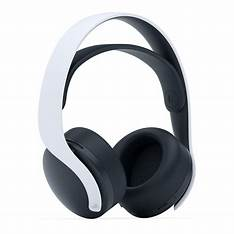
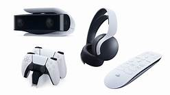
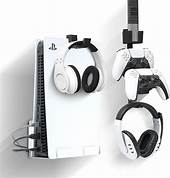
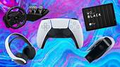

Accessories
Duelsense Edge controller
The DualSense Edge is Sony's first real take on a pro controller.
It has dabbled in attachments to add back buttons, sure, but this adds so much more.
The DualSense Edge, adds a pair of mappable back paddles, swappable joysticks with alternate cap options, adjustable triggers, a long braided cable, a carrying case and more.

Ps5 Headset:
The Sony Pulse 3D Wireless headset is the official headset of the PS5, so comes with Sony's solid reputation for good build quality, all at a reasonable $99/£89.
Add in compatibility with Sony's Tempest 3D Audio engine and you've got a rather impressive gaming headset.

Other Ps5 accessories:
The PS5 controller charger station features LED ambient light that indicates charge status behind a Marvel-style faceplate.
The dock also comes with a 39-inch USB-C charging cable, allowing the dock to be powered via console or wall charger, and theres a whole lot more for the platstation 5 to customize.

Playstation 5 Info
The best PS5 accessories are peripherals that are practically essential for Sony's next-gen system.
While you'll be able to fully enjoy the PlayStation 5 without any additional purchases, there are some additional items available that will undoubtedly improve your overall experience.

The best Ps5 accessories
The best PS5 accessories can revolutionize your setup - whether you're after a small upgrade or a whole new system.
Between pro controllers offering new ways to interact with your games and headsets making the most of the PS5's audio punch, there's plenty of gadgets and gizmos to kit out your new generation device.

Ps5 accessories
Storge device for ps5
Its taken quite some time following the launch of the PlayStation 5, its almost a year, in fact.
But, Sony has finally released the update allowing users to take full advantage of the consoles additional storage capacity, a much-needed addition given its limited 825GB internal storage.
Western Digital has duly obliged with a range of super-swift SSDs for your PS5, ranging from 500GB to 2TB as well as the option for a heatsink.

Storge device